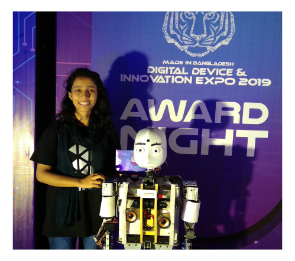

About Me
Hello, I'm Zinia Sultana Joti, a PhD student in Mechanical Engineering at the New Jersey Institute of Technology (NJIT).
At NJIT, I am collaborating with Dr. Dibakar Datta, Dr. Fatemeh Ahmadpoor, and Dr. Samaneh Farokhirad across interdisciplinary research areas involving computational mechanics, biological materials, nanoparticle–membrane interactions, and the application of Generative AI for biological materials.
I am passionate about leveraging computational methods and data-driven approaches to advance our understanding of complex biological systems and materials, while also exploring innovative applications of machine learning.

Research Interests
- Modeling of nanoparticle-membrane interactions
- Computational mechanics and molecular simulations
- Free energy calculations using statistical mechanics
- Natural language processing for scientific literature
- Generative AI and RAG pipelines
- Materials modeling and data-driven analysis
Current Research
- Mechanistic classification of nanoparticle-membrane interaction literature using natural language processing.
- Computational modeling of membrane deformation and nanocarrier binding.
- AI-assisted workflows for organizing and analyzing research papers.